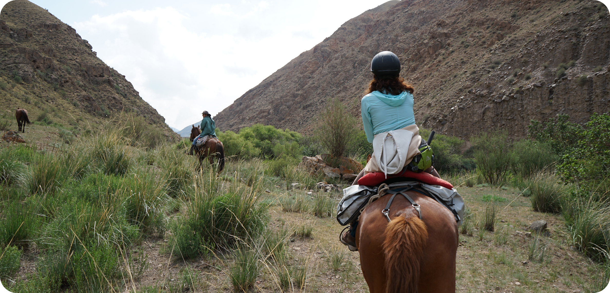

20+ years in the design field
I started as a graphic designer and spent several years creating visual advertising for companies and agencies. That background gave me a strong foundation in composition, typography, and storytelling, and taught me how much design depends on truly understanding people.
Over time, I realised that a good product can't be built on visuals alone. I became deeply interested in user psychology: how people interact with interfaces, what they actually need, where they get stuck, and how the experience can be improved step by step.
I also genuinely love teaching and talking about design. I teach design at a design academy, and working with students — especially people who are just entering the field — is one of the most rewarding parts of my work. I enjoy mentoring, sharing practical ways of thinking, and helping others build confidence through real projects. I also love speaking at events and conferences — I'm happiest when I can translate "why design matters" into something people can feel and apply.
Today, I design digital products that balance clarity and craft — making complex things understandable, useful, and enjoyable to use.

Outside of work, I love exploring the world — both physically and intellectually. I'm drawn to places with real history and real landscapes: mountains, ancient cities, places that make you feel small in the best way.